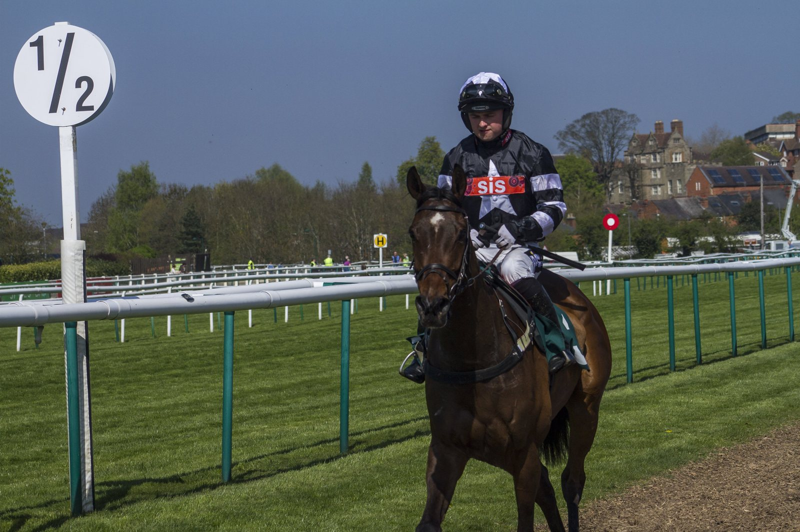

El cajón 11 no inquieta a David Hayes: Ka Ying Rising defiende título en The Everest
Ka Ying Rising, el caballo con mayor valoración del mundo, saldrá desde el cajón 11 en The Everest del sábado en Randwick, un puesto desde el que nunca se ha ganado la carrera.

La estadística juega en contra. En las nueve ediciones anteriores de The Everest, ningún ganador partió desde el segundo cajón más abierto. Hay un matiz: Bella Nipotina se impuso en 2024 desde el 12, pero aquel año corrieron once caballos por una baja de última hora.
Al preparador David Hayes el sorteo no le quita el sueño. Ka Ying Rising ganó la edición de 2025 desde el cajón siete con Zac Purton y vuelve a los 1.200 metros de Randwick como vigente campeón.
El argumento de Hayes empieza antes de que se abran los cajones. En Australia el lote se divide en dos grupos que entran en el partidor hacia fuera, en The Everest desde las puertas uno y siete. Eso coloca a Ka Ying Rising entre los últimos en entrar. "Sé que Zac estará contento, porque entra el penúltimo con el sistema australiano. En Hong Kong normalmente entra el último y se pone un poco nervioso en los cajones; ese es el pequeño detalle que puede salir mal", explicó el preparador.
El plan de carrera lo resumió en pocas palabras: "Es tan rápido que puede cruzarse sin esfuerzo. Si el ritmo es demasiado alto para él, irá segundo o tercero; si no lo es, tomará la cabeza".
Para Hayes, el peligro estaba en el otro extremo. "Me preocuparía más quedarme encerrado desde el uno, el dos o el tres. Aunque salga lento, creo que estará fuera de problemas, y los 1.200 de Randwick son estupendos: hay una recta larga para cruzarse, nada caótico como en Sha Tin. En Sha Tin solo tienes 200 metros y aun así se cruza con facilidad, ¿no?".
Ka Ying Rising se medirá el sábado a once rivales.
Por Martín Larrañeta